Re:design
A computational design workshop for humans and AI.
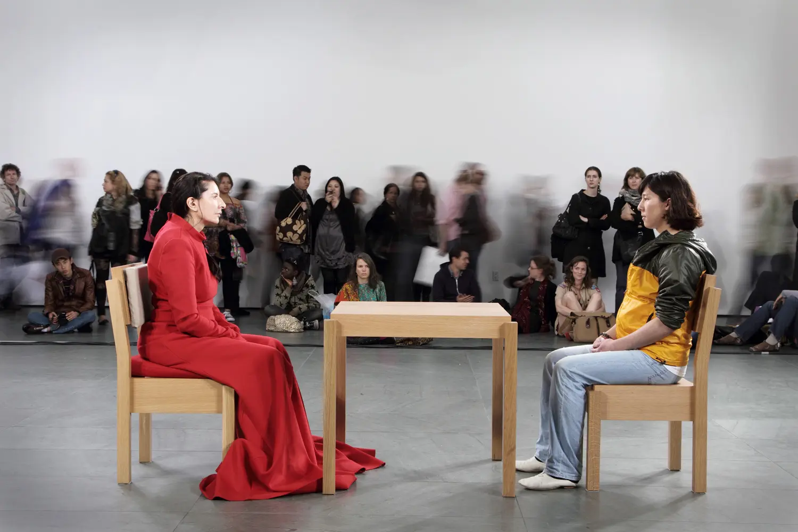
Marina Abramović · The Artist Is Present · MoMA 2010
Is the designer present?
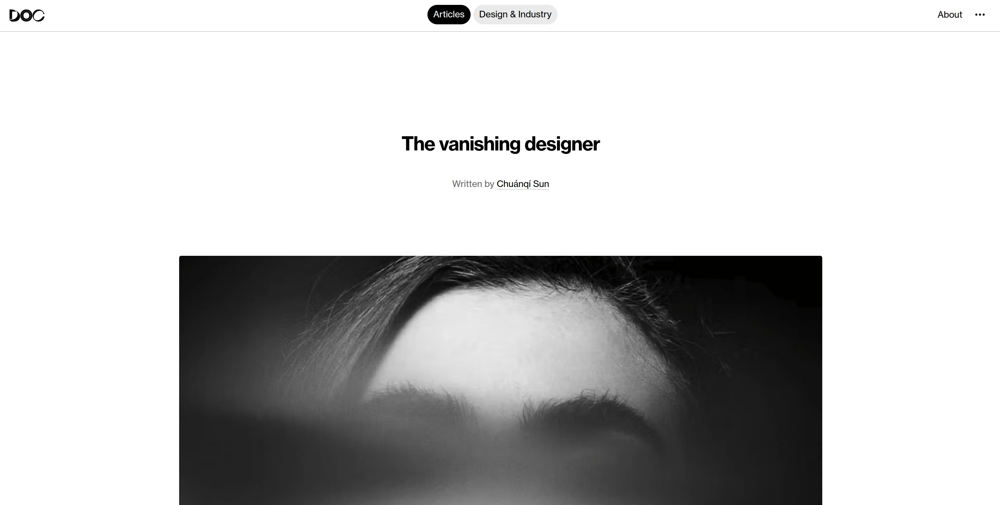
Chuanqi Sun
Ex‑software designer and hacker.
2nd‑year master @TMG.
50+ design projects shipped last year. AI was instrumental.
By the end of today
You will have the frameworks, intuition, and code to build your own AI‑empowered tools.
More creative. More human. Perhaps more‑than‑human.
Part 1
New Frontiers
- Text: Semantic rendering
- Voice: Affective voice
- Image: Reality editing
- World: Interactive worlds
- Robotics: Embodiment
Trend 1 · From token generation to semantic rendering
Trend 2 · Voice
From synthesis
to affective enactment.
Trend 3 · Image
From artifact generation to reality editing.
LoFi to HiFi, back to LoFi
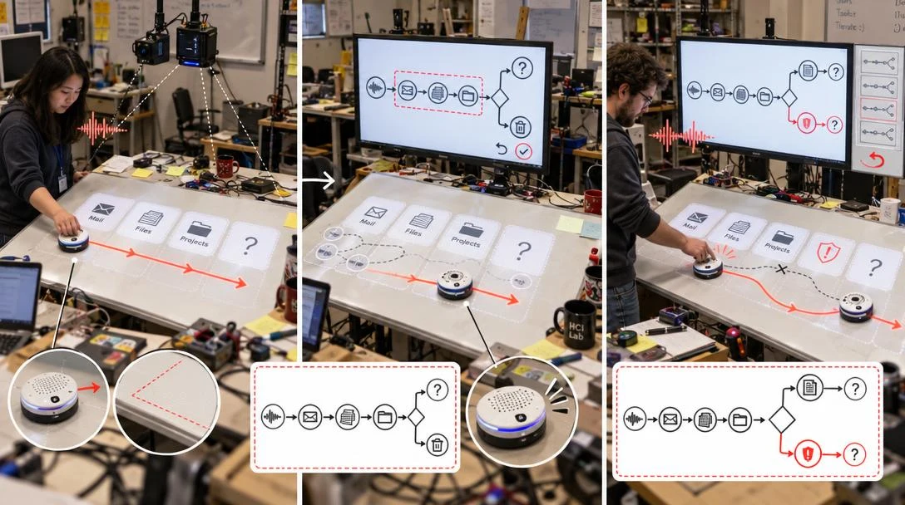
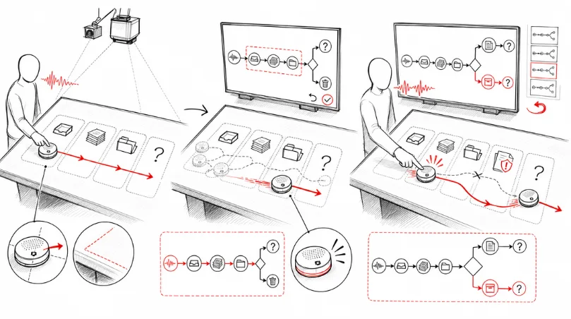
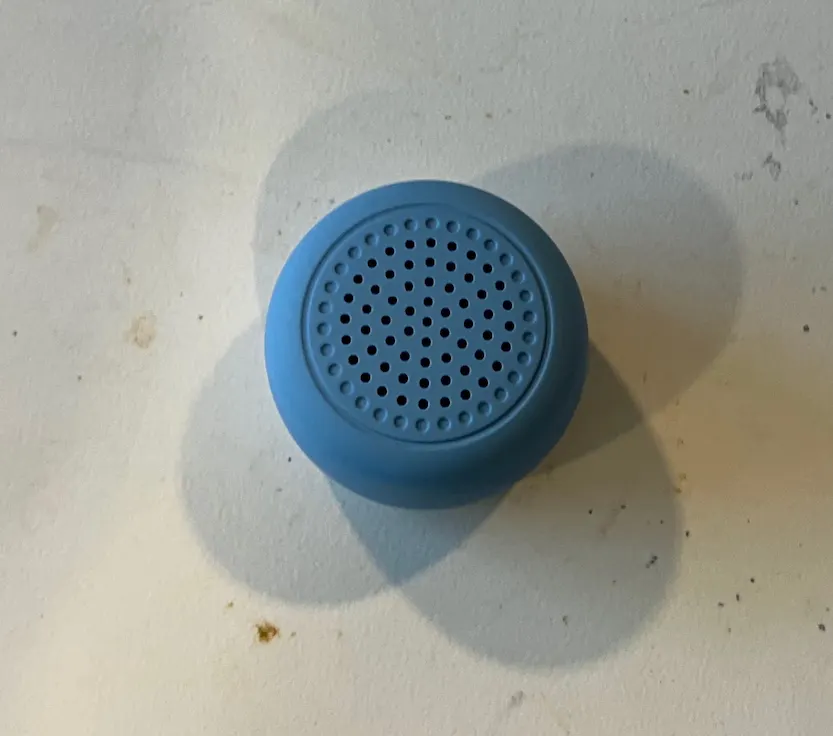
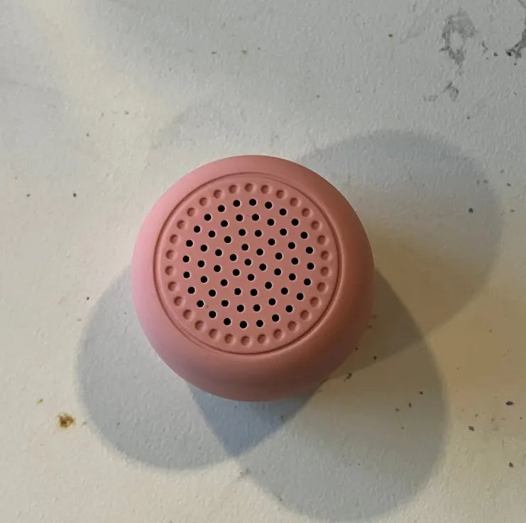
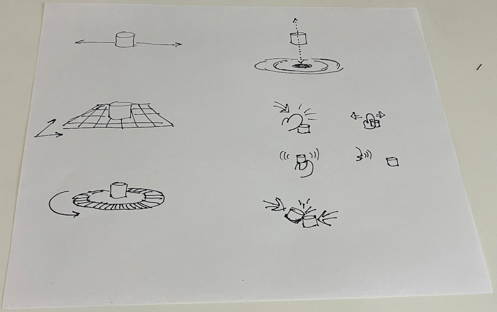
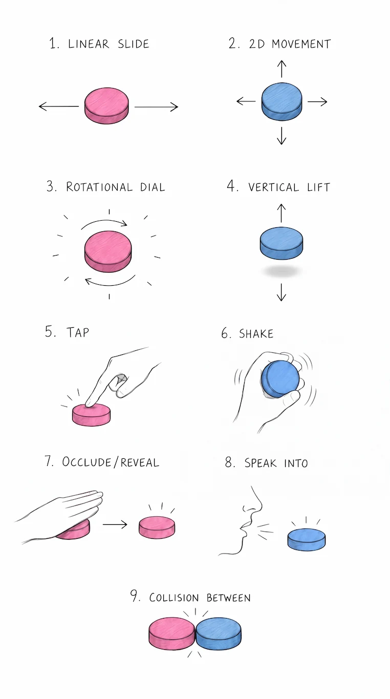
Trend 4 · Video & worlds
Slow, batch, offline → interactive & spatial.
Trend 4 · Interactive world models
- Gemini Omni Google
- Genie Google DeepMind · interactive world models
- Marble World Labs · spatial intelligence
- HY World 2.0 Tencent Hunyuan · interactive 3D generation
Trend 5 · Computer vision
On the edge.
In real time.
Hand segmentation + desk‑surface object segmentation, running locally.
Part 2
Emerging Disciplines
- More‑than‑human design
- Spatial, embodied, physical AI
- Direct agency
More‑than‑human design
Do you say “please” and “thank you” to your AI?
More‑than‑human design
What is it like to perceive as a machine?
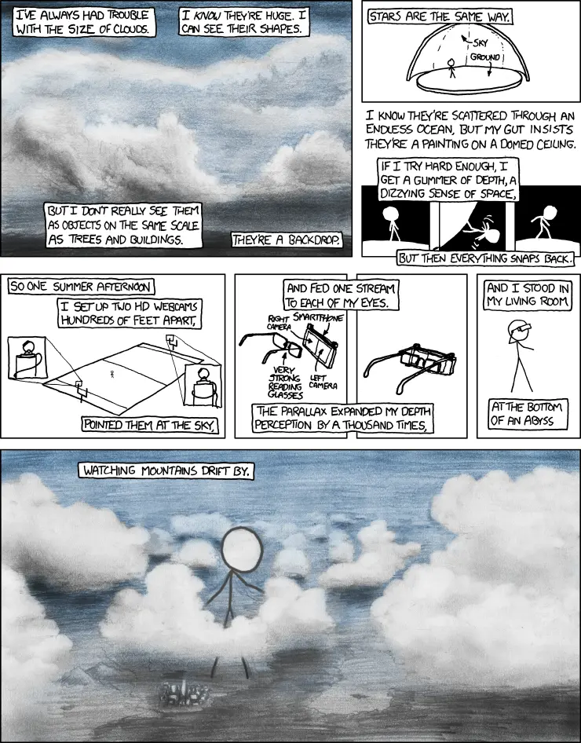
Spatial · Embodied · Physical
“Put that there.”
Richard Bolt, MIT Architecture Machine Group, 1980.
Forty‑five years later: OpenAI Astra, tangible prompting.
Direct agency · my thesis
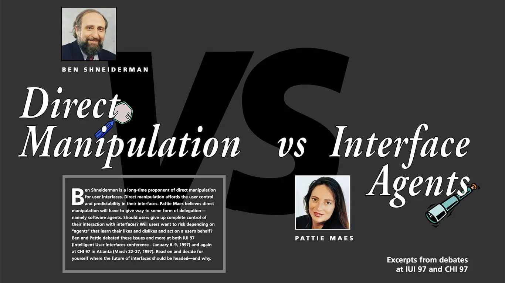
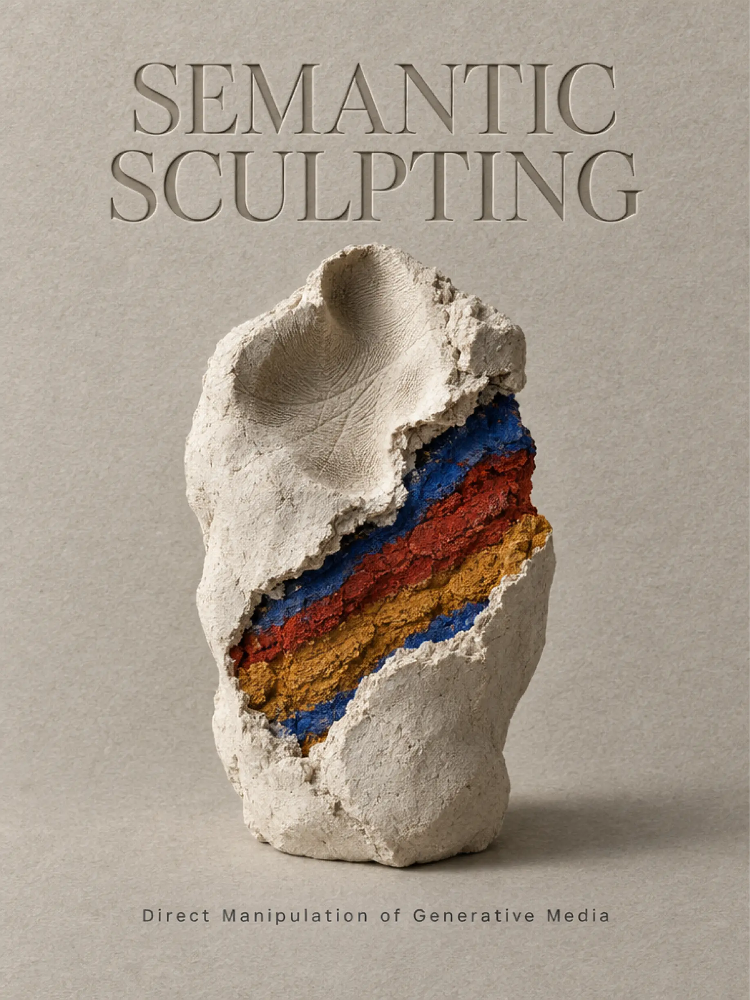
Semantic sculpting.
A teaser. To be continued.
Part 3 · New [old] ways to design
Generate
→ Evaluate
→ Curate
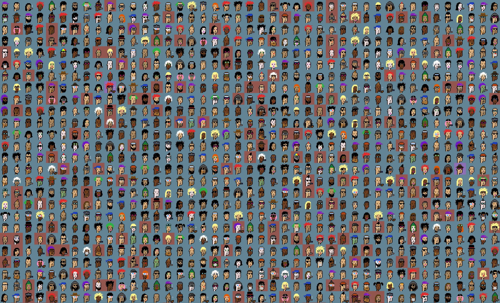
Step 1 · Generate
Combinatorial
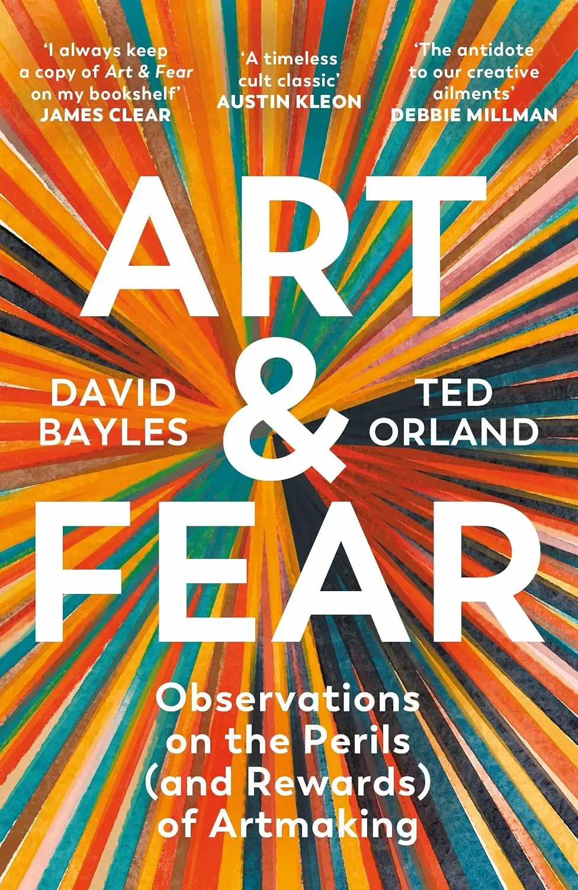
Quantity over quality.
The ceramics class: the group graded on volume produced the best pots.
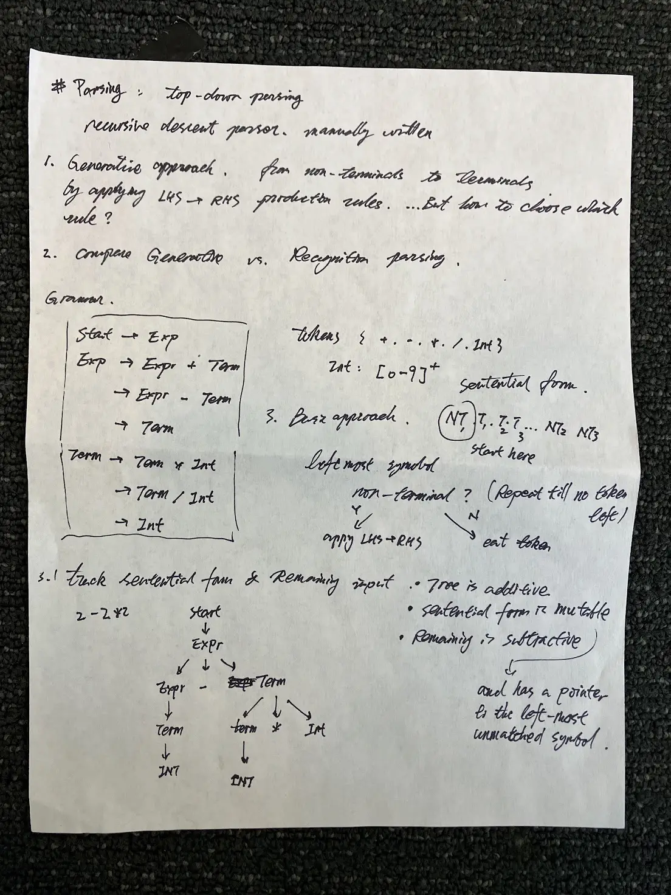
Algorithmic literature review · my thesis pipeline
Step 1 · Generate · techniques
- Combinatorial exploration
- Geometric grounding life.config / Void Shapes — hallucination as a feature
- Contextual grounding Granola
- Reverse prompting let the AI interview you
- Algorithmic literature review
- Life & experience simulation personas with soul
Step 2 · Evaluate
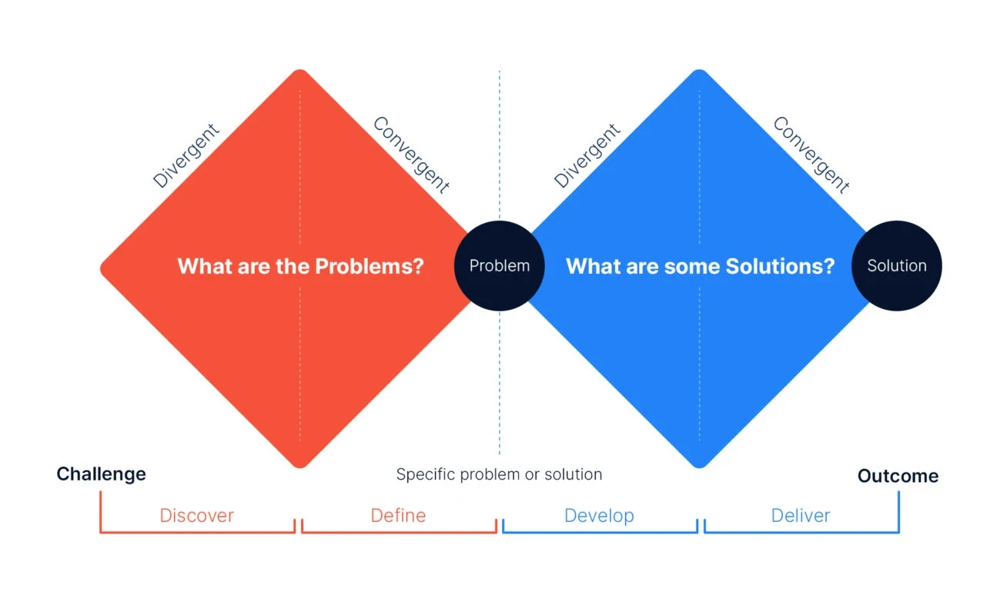
Step 2 · Evaluate · techniques
- Quantification design rubrics → scores → sort, rank, filter
- Semantic axis sorting embedding distance to polar attributes: practical ↔ speculative
- Interactive data visualization LLM‑generated views of large solution spaces
- Virtual prototyping Time Travel Radio · Tangible Media Group
Demo · Answering Machine
Step 3 · Curate
curare
Latin: to care for.
Selection is intent. Selection is the human act.
Step 3 · Curate · techniques
- Embedding deduplication & clustering
- Evidence‑based synthesis grounded theory · Glaser & Strauss
- Human‑in‑the‑loop annotation multi‑cursor, inline comments
- Infinite ideation loops select · prune · branch
- Personal knowledge base Zettelkasten
Step 3 · Curate · demos
Return to the cliffhanger · Is the designer present?
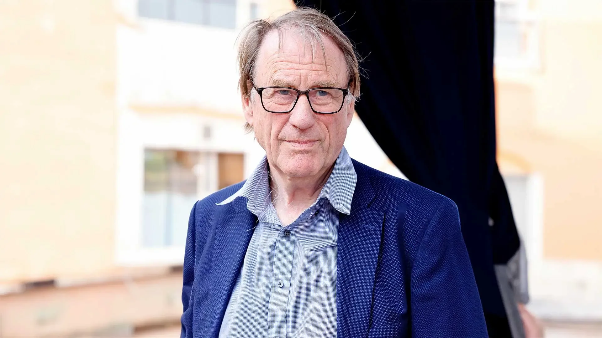
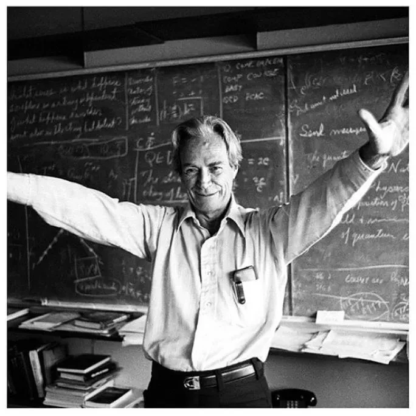
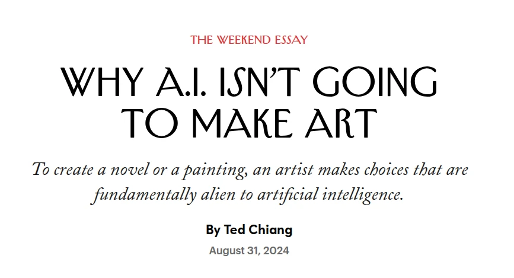
“What I did not decide,
I cannot create.”
Part 4 · Hands‑on · groups of 3
Design a novel way for humans to communicate with AI.
Not a chatbot.
Practice one or more
- Self‑interview reverse prompting from lived experience
- Algorithmic literature review find the whitespace
- Quantify & evaluate score, rank, iterate
- Prototype & showcase virtual prototype + landing page
Recommended tools: Google Antigravity, OpenAI Codex, or Anthropic Claude Code
Contributions
- Surveyed five frontiers semantic rendering · affective voice · reality editing · world models · edge vision
- Examined three disciplines more‑than‑human · spatial/physical · direct agency
- Generate → Evaluate → Curate
- Built something, together
I salute you.
For your attention — and for the work you’re about to make.